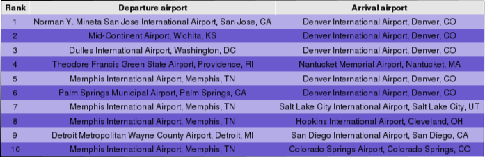

|
 |
| Geographical map of North America with most recently (i.e. during
the last minutes) processed U.S. domestic flights. Yellow points and dashed lines indicate airports and flights, respectively. The total number of processed flights is included at the bottom. |
The approximate posterior density functions related to the METAR flight category at departure and arrival airport: marginal visual flight rules, instrument flight rules and low instrument flight rules versus visual flight rules. |
| Regression fits and 95% credible sets for temperature, wind speed and flight distance. The former two are available for both the departure and arrival airport. |
 |
|
| Airlines having lowest delays | Airlines having highest delays |

|
| Flight paths having lowest delays |
|  |
| Flight paths having highest delays |